1가게 QR을 찍어요
탁자나 벽에 붙은 「그때 그 놀이」 QR을 휴대폰 카메라로 비춰요. 앱을 깔지 않아도 바로 열려요. 첫 화면에서 놀이를 하나 골라 눌러요.
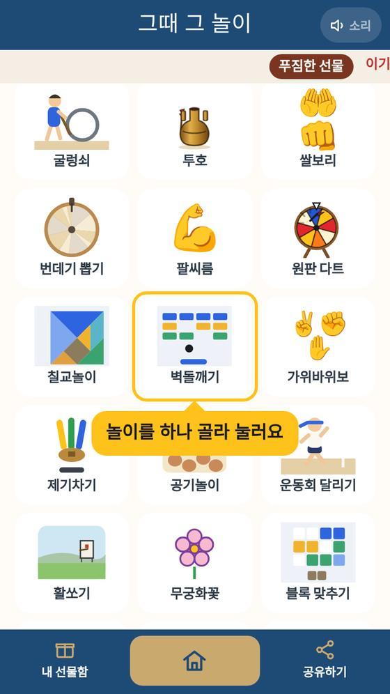
처음 오셨다면 그림을 보며 한 편씩 따라 해 보세요.
노란 말풍선이 가리키는 곳을 누르면 돼요.
탁자나 벽에 붙은 「그때 그 놀이」 QR을 휴대폰 카메라로 비춰요. 앱을 깔지 않아도 바로 열려요. 첫 화면에서 놀이를 하나 골라 눌러요.

「다복 사장님과 한 판」은 가게 사장님과 겨뤄요. 「친구와 같이 하기」는 폰 하나로 둘이 번갈아 해요. 무엇을 걸지도 고를 수 있어요. 고른 뒤 「시작!」을 눌러요.
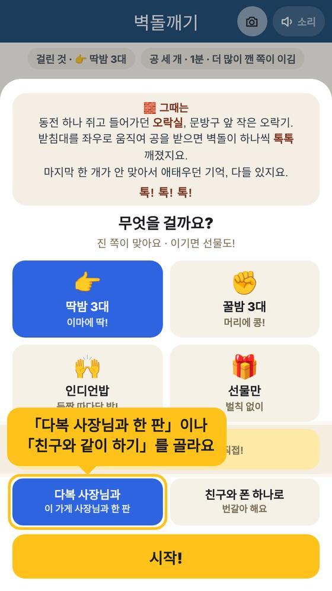
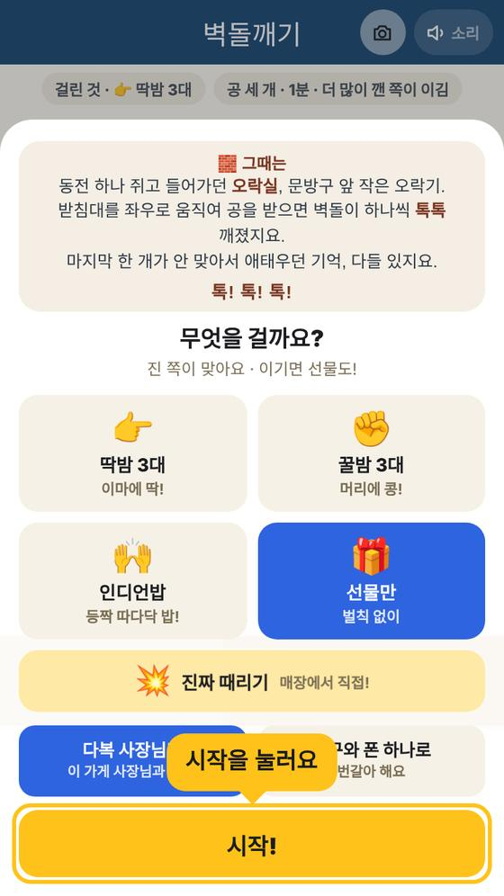
화면에 반투명 손가락이 어디를 누를지 알려 줘요. 누구 차례인지는 양옆 불빛으로 보여요. 그 시절 이야기도 한 줄씩 나와요.
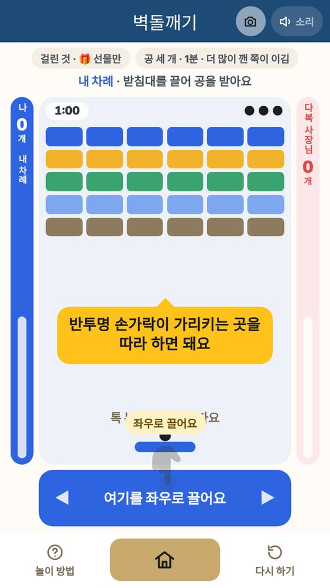
한 판이 끝나면 결과 카드가 나와요. 「결과 사진 저장」으로 내 휴대폰에 남기고, 「공유하기」로 친구에게 보내요. 떠오르는 사람이나 장소를 한 줄 적어 두면 사진에 함께 들어가요.
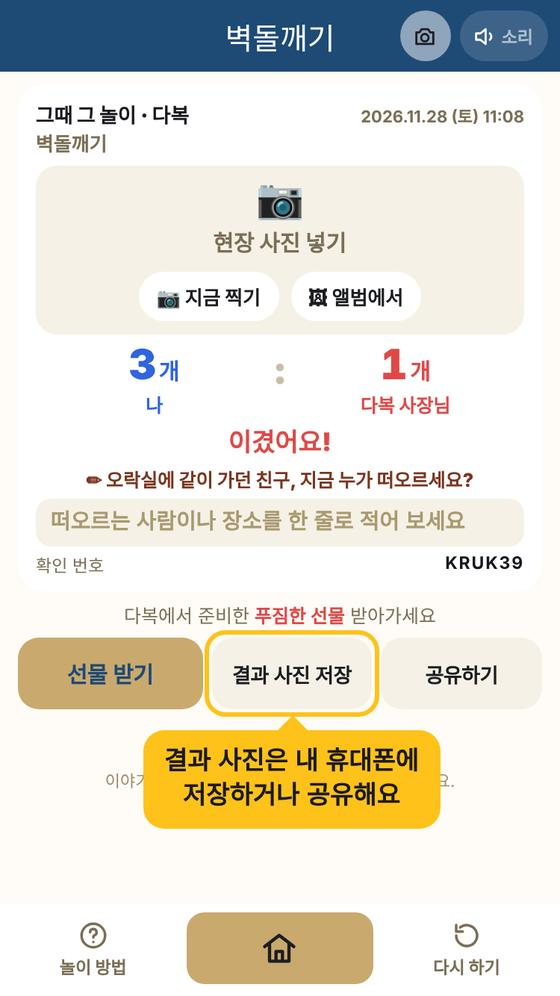
결과 카드에서 「선물 받기」를 눌러요. 이름이나 별명만 적어요. 전화번호는 받지 않아요. 선물은 하루에 한 번 받을 수 있어요.
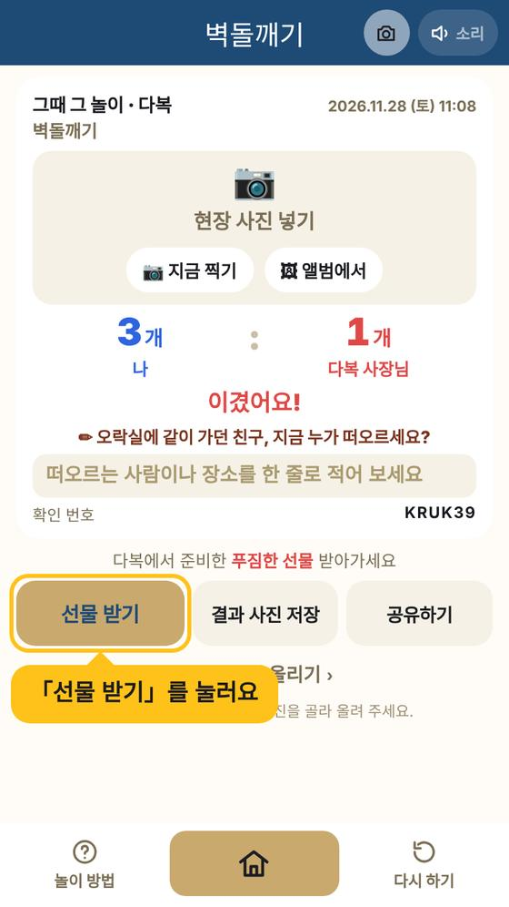
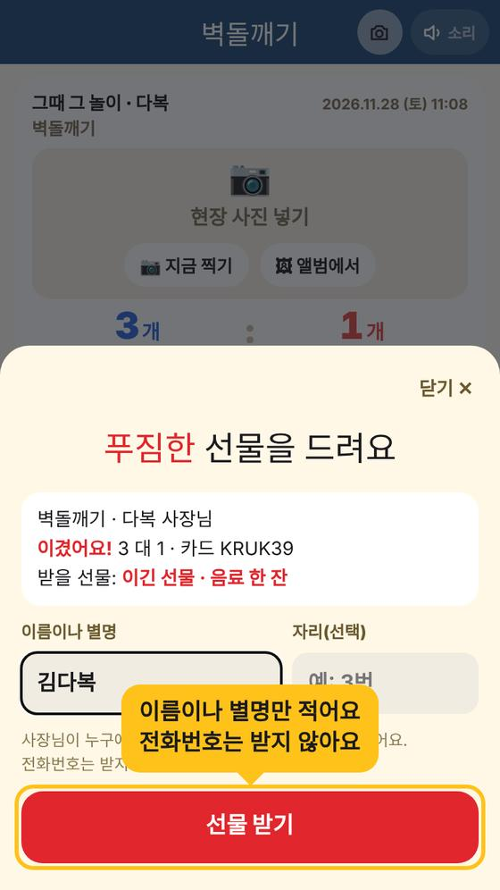
쿠폰 화면을 계산대 직원에게 보여 주면 선물을 드려요. 받은 쿠폰은 ☰ 메뉴 「내 선물함」에 남아 있어요.
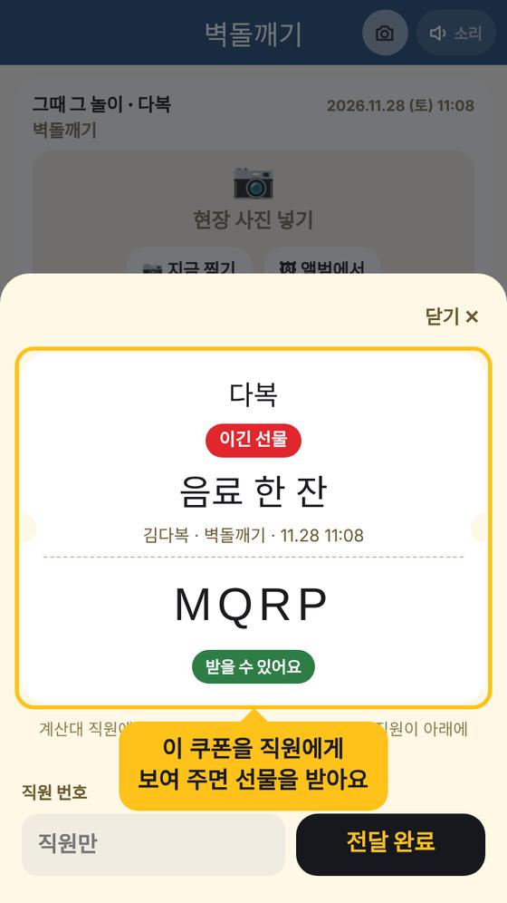
첫 화면 「이야기방」 칸이나 결과 카드 「이야기방에 올리기」로 오늘 놀이 추억을 가게 이야기방에 남겨요.
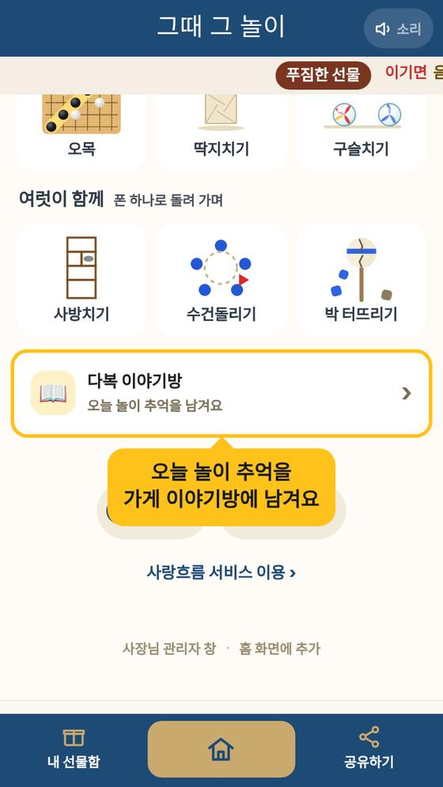
사랑흐름 서비스 이용에서 「개인 사업자 · 그때 그 놀이」의 「문의하기」를 누르면 카카오톡 상담으로 이어져요. 가게 이름과 드릴 선물만 알려 주세요.
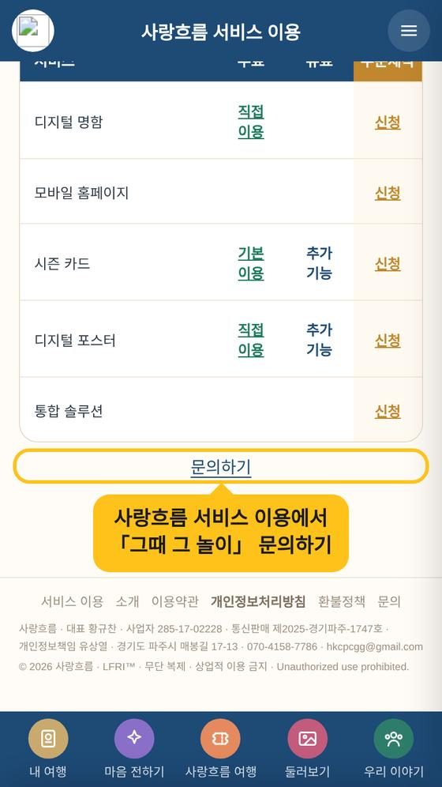
받은 가게 주소에서 ☰ 메뉴 「관리자 창 (사장님)」을 누르고 관리자 번호를 넣어요.
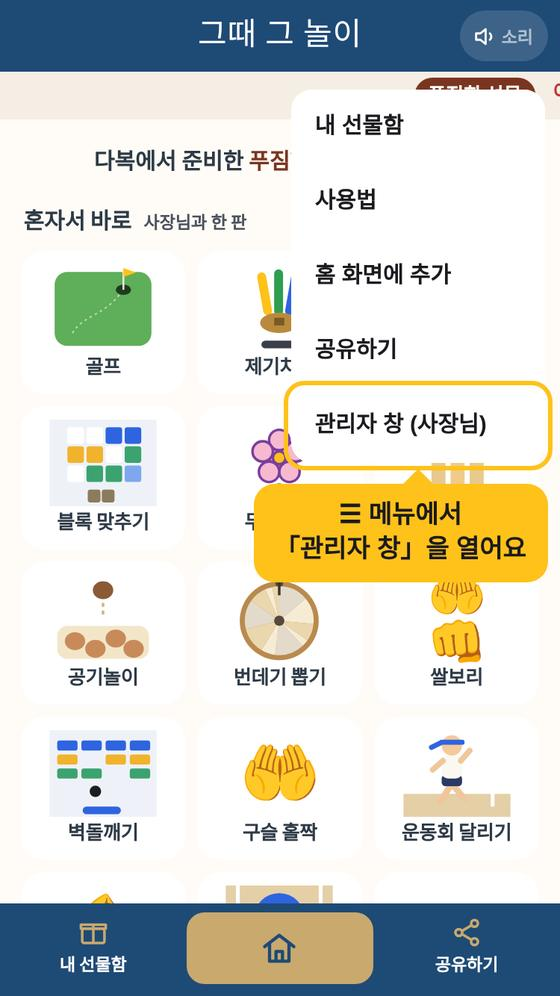
「선물 설정」에서 이기면 받는 선물 · 참가 선물 · 오늘의 특별 선물과 주는 조건을 골라요.
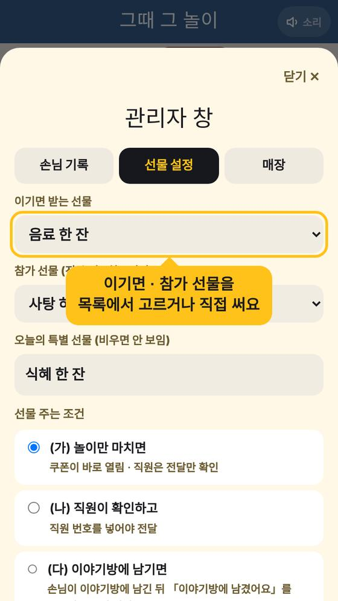
「매장」에서 우리 가게 QR 포스터를 내려받아 탁자나 계산대에 붙여요.
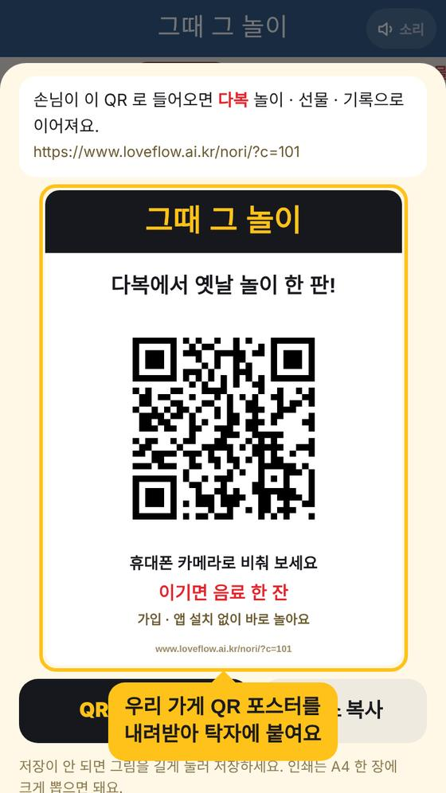
「손님 기록」에서 오늘 몇 분이 놀았는지, 선물을 몇 개 드렸는지 보고 직원 번호로 「전달 완료」를 눌러요.
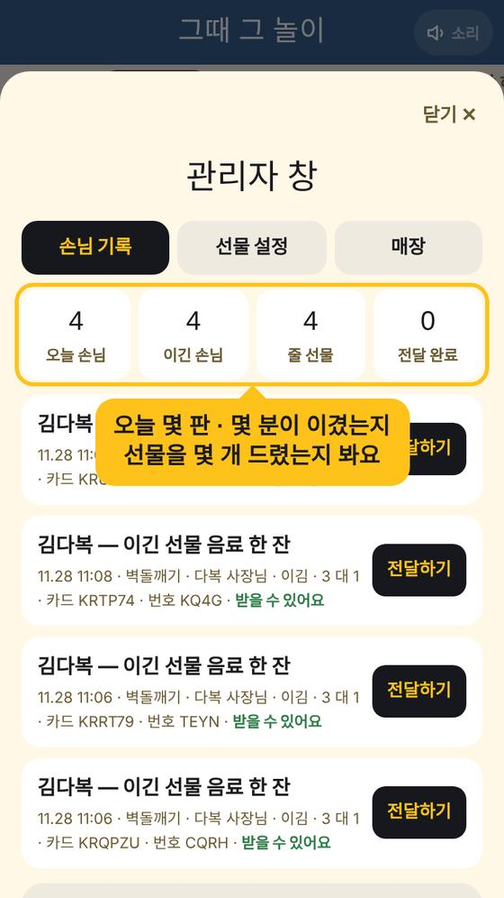